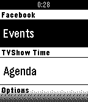
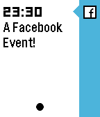
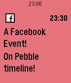

So you've got yourself a shiny new Pebble watch (wise choice!), but your Timeline is looking rather bare and empty with only Google Calendar (and the Weather forecast to keep it company)?
Clearly, you are a person who knows how to get what they want, as populating the timeline is exactly what TimeSync was created for!
(You can grab the app here by the way)

  


mmmmmm sauce
You can all the source code for TimeSync at GitHub under the Apache 2.0 license
But if you do venture forth, please, don't mind the mess.
(Because Facebook made me write one)
You can find it here, and it hopefully outlines just how much I care about keeping your data safe while at the same time how much don't care about it's contents. This service is for you and no one else.
I'm no artist (in fact, I'm fairly certain I have a negative artistic ability), so I have scrounged the wonderful icons you can see on this page (and even the design of this site) from various sources:

If you need to contact me (for whatever reason), you can send one of those new-fangled digital telegrams to "contact squiggly-a-thing time-sync.com"